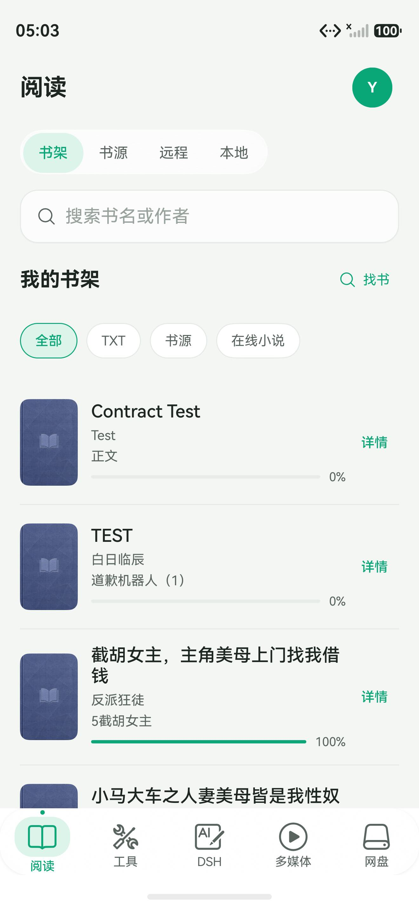
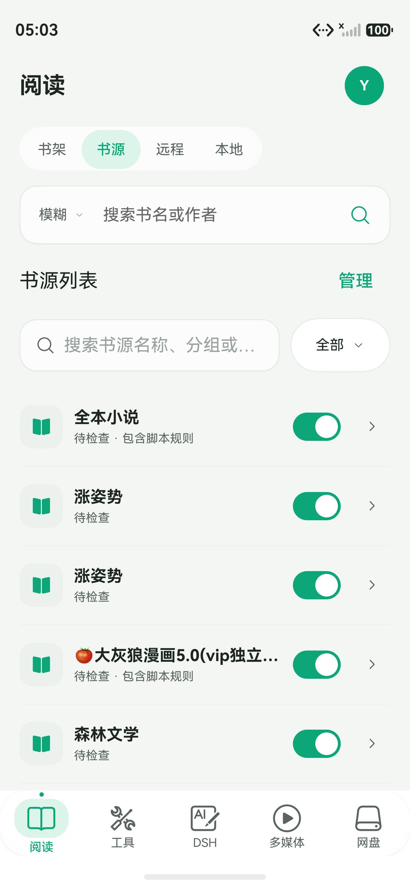
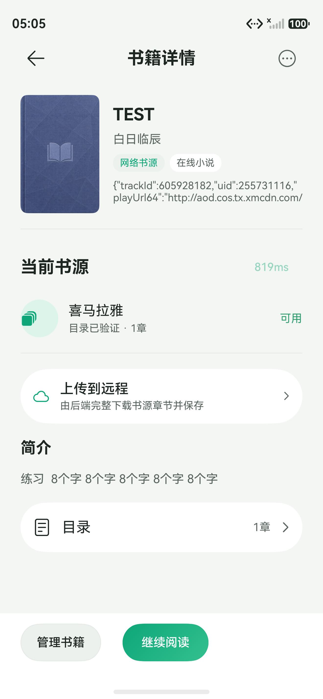
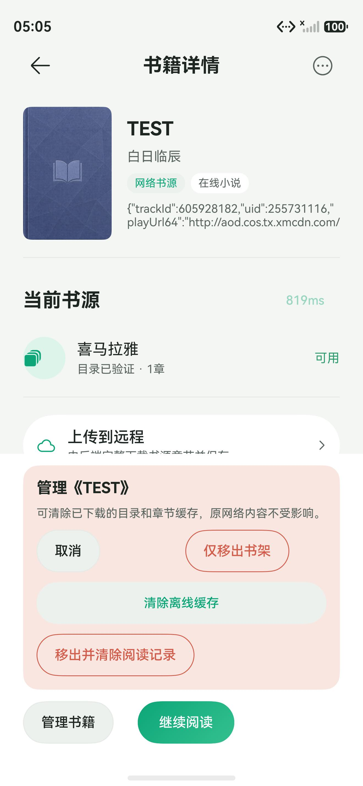
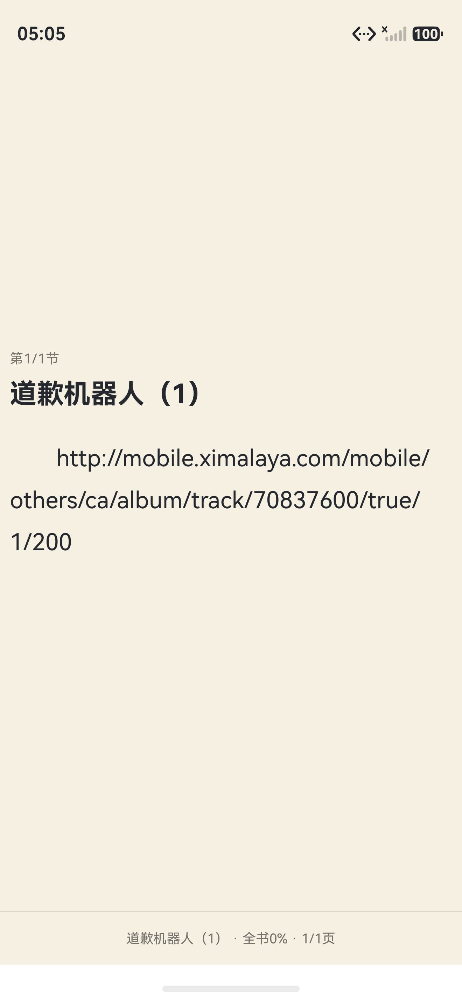
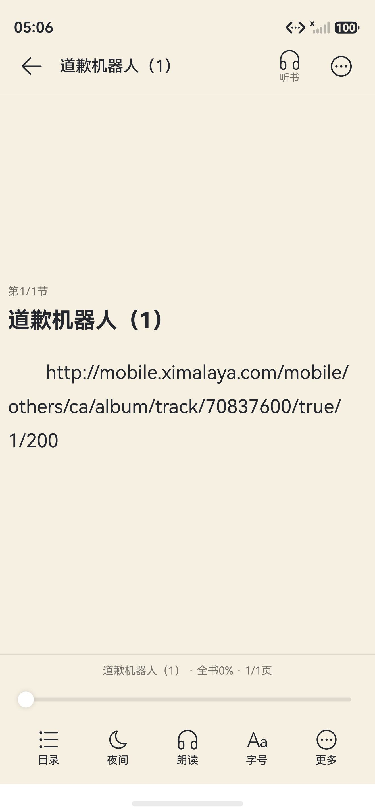
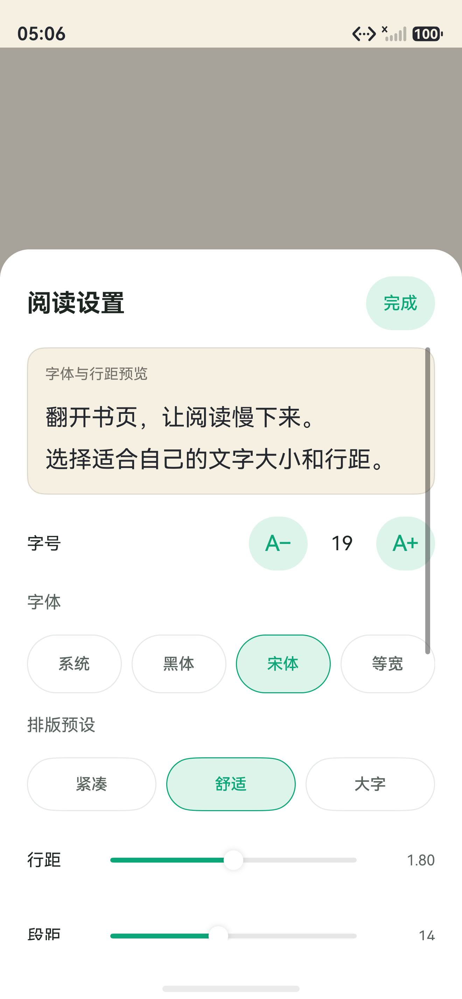

需优化01 · 书架点击查看原始截图实际观察首条书名约在屏幕44%处，上方多层标题与筛选占位。保留直接阅读和详情分开，操作明确。设计调整压缩头部；最近阅读优先；来源、格式、标签分组筛选。
需重组02 · 找书点击查看原始截图实际观察点击找书后，主内容是书源开关与规则；同屏两种搜索。保留搜索与来源管理能力已经存在。设计调整找书页优先查询与书籍结果，书源配置降为次级入口。
优先修正05 · 图书详情点击查看原始截图实际观察最新章节位置出现原始结构数据；目录验证成功与正文可读混淆。保留目录与继续阅读入口清楚。设计调整验证字段类型；分开目录与正文状态；阅读信息前移。
需分层06 · 书籍管理点击查看原始截图实际观察红色面板混合清缓存、移出书架和清记录；底部继续阅读仍可见。保留删除范围已有一定说明，取消入口可见。设计调整中性管理面板；按影响范围分组，永久删除独立确认。
需验证语义07 · 正文与位置点击查看原始截图实际观察样本为地址文本，显示0%与1/1页；不能据此断言进度计算错误。保留正文可直接进入，支持底部位置入口。设计调整区分章节位置、估算页数与读完；补正常长篇排版样本。
功能完整08 · 阅读工具栏点击查看原始截图实际观察听书／朗读、上下更多、重复状态，信息重叠。保留目录、夜间、字号均可直接进入。设计调整整合朗读和更多；增加显式跳转后的返回刚才位置。
可微调，偏重10 · 阅读设置点击查看原始截图实际观察78%高度面板，预览和选项使亮度、主题落在屏下。保留字号按钮、预设、预览和保存已可用。设计调整快速外观与详细设置分开；亮度语义与实现对齐。